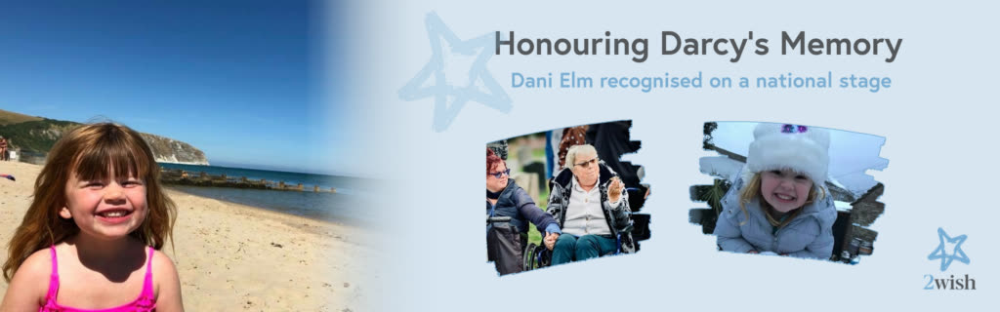

November 2026
Dani Elm, recognised on a national stage
Supported by 2Wish after losing her daughter Darcy in 2018, Dani was nominated for the Women of the Year Awards 2026 in London.
Her memoir, Our Last Steps, has sold around 500 copies and raised about £2,600 for charity, shared with 2Wish.